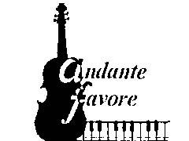

Welkom
Wie zijn we
Wat doen we
Avondvullende concerten
Recepties, feesten en diners
Kerkelijke plechtigheden
Academische zittingen
Samenwerkingsverbanden
Onze agenda
Komende concerten
Voorbije concerten
Technische fiche
Fotoboek
Contact
Links
Andante Favore
is te vinden op :
60 jaar muziek in Vlaanderen :
https://www.muziekarchief.be
enkele bevriende orkesten :
harmonieorkest :
https://www.okra.be/activiteiten/trefpunt/okra-promenadeorkest-gent
kamerorkest :
https://www.kamerorkestdacapo.be
sopraan:
https://www.anndewinter.be
interessante muzieksites :
schitterende muziekanimaties :
https://home.hccnet.nl/paul.van.coeverden/sitemap.html
muziektheorie :
https://www.8notes.com/theory/